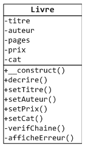

Quand on instancie une classe avec l'opérateur new un espace mémoire est attribué à
l'instance de l'objet créé. Cet espace mémoire est construit par une méthode particulière qui
s'appelle un constructeur.
Dans PHP, il existe également un destructeur qui est une méthode particulière
appelée juste avant que l'objet ne soit supprimé de la mémoire.
Constructeur
Un constructeur sert essentiellement à initialiser les valeurs des
attributs d'un nouvel objet lors de l'instanciation de sa classe.
Un constructeur peut être implicite ou explicite. Bien que
dans 99% des classes le constructeur soit explicite, nous commencerons par rapidement voir ce
qu'est un constructeur implicite.
Constructeur implicite
Un constructeur implicite est un constructeur qui n'est pas défini par le
concepteur de la classe. Dans le code de la classe on ne trouvera aucune méthode particuliére
qui serait invoquée lors de l'instanciation.
Dans le cas d'un constructeur implicite, si les attributs n'ont pas de valeur assignée lors de
leur définition, ils ont par défaut la valeur NULL.
Si la classe a un constructeur implicite, les parenthèses qui suivent son nom lors de son
instanciation sont facultatives : $objet = new Classe est équivalent à $objet
= new Classe().
Constructeur explicite
Un constructeur explicite est une méthode magique qui s'appelle __construct().
Si cette méthode __construct est définie explicitement dans le code de la classe,
elle sera invoquée automatiquement par PHP lors de l'instanciation de la classe avec
l'opérateur new.
La méthode constrcuteur __construct() accepte généralement un ou plusieurs
paramètres qui vont servir à initialiser la valeur d'attributs de la classe pour caractériser
l'instance du nouvel objet.
Si le constructeur explicite n'a pas de paramètre, les parenthèses qui suivent le nom de la
classe lors de son instanciation sont facultatives. On peut écrire $objet = new
Classe.
Si le constructeur explicite accepte des paramètres, les parenthèses qui suivent le nom de la
classe lors de son instanciation sont obligatoires. Il FAUT écrire $objet = new
Classe().
Avec PHP, il n'est pas possible (comme en Java par exemple) de
surcharger un constructeur.
Validation des paramètres
Si on passe des paramètres au constructeur, ceux-ci doivent être validés
avant d'être affectés comme valeur à des attributs.
Si des setters sont implémentés pour les attributs, ils doivent être
appelés depuis le constructeur pour effectuer la mise à jour de la valeur de l'attribut.
S'il n'y a pas de setter pour les attributs, la validation doit être
faite dans le constructeur.
L'exemple suivant est une classe Livre avec des attributs titre, auteur, nombre de pages,
prix et catégorie. Les valeurs de ces attributs sont validées dans le constructeur, sauf pour
le prix qui a un setter.
Paramètres dans un tableau
ASTUCE : quand un constructeur (ou une méthode ou une fonction) acceptent
un grand nombre de paramètres, il est pratique d'utiliser un tableau pour passer ces
paramètres.
Le plus pratique est d'utiliser un tableau associatif. On peut ainsi
nommer les paramètres, les passer dans n'importe quel ordre et facilement en ajouter de
nouveaux.
Bien que d'un usage moins pratique, on peut aussi utiliser un tableau à index numérique.
L'exemple suivant instancie des guitares avec les informations trouvées dans un fichier texte
référençant nos guitares en vente. Le fichier s'appelle guitares.txt et se trouve
dans le dossier stock.
Le contenu du fichier est le suivant :
On trouve le même genre de formattage que celui utilisé dans la page sur la lecture de fichiers.
On considère que les informations trouvées dans le fichier sont valides et on ne fait
donc pas de vérifications dans le constructeur de la classe Guitare.
Destructeur
De la même façon qu'il y a une méthode magique __construct() invoquée
automatiquement par PHP lors de l'instanciation d'une classe, il existe une autre méthode
magique __destruct() qui, si elle est définie, sera invoquée automatiquement par
PHP lors qu'un objet sera supprimé de la mémoire car il n'existe plus aucune référence à
l'objet.
La méthode __destruct() de PHP est l'équivalent de la méthode finalize()
en Java.
La méthode __destruct() n'accepte pas de paramètre. Si on la définit avec un ou des
arguments, le script n'est pas exécuté et s'arrête avec une erreur fatale.
L'exemple suivant montre une classe Stock qui contient les objets Guitare de notre stock.
Quand on détruit l'instance de Stock ($stock = null;) observez les appels de
destructeurs : le destructeur de l'objet Stock est d'abord invoqué, puis comme il n'existe plus
de référence aux objets Guitare leur destructeur est à leur tour invoqué.
Exercice : constructeur explicite

la classe Livre
Reprenez la classe Livre de l'exercice précédent et faites
les tests de validité en appelant les setters dans le constructeur.
Les modifications suivantes doivent être apportées :
- si une ou des valeurs passées au constructeur ne sont pas valides, un message d'erreur doit
être affiché sans que le script soit arrêté,
- si une des valeurs passées au constructeur n'est pas valide, le nouvel objet est supprimé.
Le message d'erreur affiché doit être de la forme 'Valeur [valeur passée] invalide pour
l'attribut [nom attribut].'
Vous devez tester votre code en instanciant des Livre avec les informations
suivantes qui provoqueront toutes des erreurs :
L'exercice consiste à instancier des Livre suivant la classe simplifiée
ci-contre avec les informations trouvées dans notre base de données exemple pour
MySQL.
On a supprimé les setters de la classe car on considère que les informations provenant de la
base de données sont correctes et n'ont pas besoin d'être validées.
la classe Livre
schéma de la base de données php_tuto
Pour que l'exemple fonctionne, il faut bien sûr que la base de donnée de test php_tuto
soit toujours installée sur votre serveur MySQL. N'oubliez pas d'inclure la bibliothéque bib_params.php
pour les paramètres de connexion.
Les informations à passer au constructeur se trouvent dans la table livres et
dans la table auteurs. Tous les livres de la table livres seront
affichés triés par titre. Le tableau retourné par la fonction mysqli_fetch_assoc()
sera passé tel quel au constructeur.
Réalisez une classe BDD (base de données, très simpliée, voire simpliste) avec une
méthode destucteur qui ferme la base de données quand l'objet base de donnée est supprimé.
Comme pour l'exercice précédent, on utilisera notre base de données exemple pour MySQL.
schéma de la base de données php_tuto
Pour que l'exemple fonctionne, il faut bien sûr que la base de donnée de test php_tuto
soit toujours installée sur votre serveur MySQL. N'oubliez pas d'inclure la bibliothéque bib_params.php
pour les paramètres de connexion.
Le constructeur n'a pas de paramètre. Il réalise la connexion avec les constantes BD_SERVEUR,
BD_USER, BD_PASS, BD_NOM. Si la connexion n'est pas possible, la méthode stopper()
est appelée avec le message "Pas de connexion".
La méthode lire() a un seul paramètre : la requête SELECT à envoyer
à la base. Pour simplifier, on ne fera pas de test de validité pour s'assurer qu'on a bien
une requête SELECT.
Si cette requête provoque une erreur, la méthode stopper() est appelée avec le
message "Erreur requête".
Les enregistrements sélectionnés par la requête sont renvoyés par la méthode sous la forme
d'un tableau d'enregistrements (ie un tableau de tableaux).
La méthode stopper() a un seul paramètre : le texte d'un message d'erreur. Le
message d'erreur est affiché puis le script est arrêté.
Le destructeur ferme la base de données avec la fonction mysqli_close(). Pour
contrôler que le destructeur est bien appelé, il affichera "Fin du destructeur BDD".
Le script doit afficher la liste des auteurs (nom et prénom) contenus dans la table auteurs.